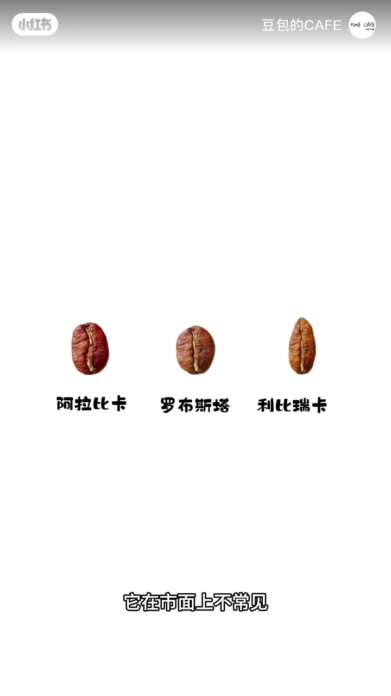
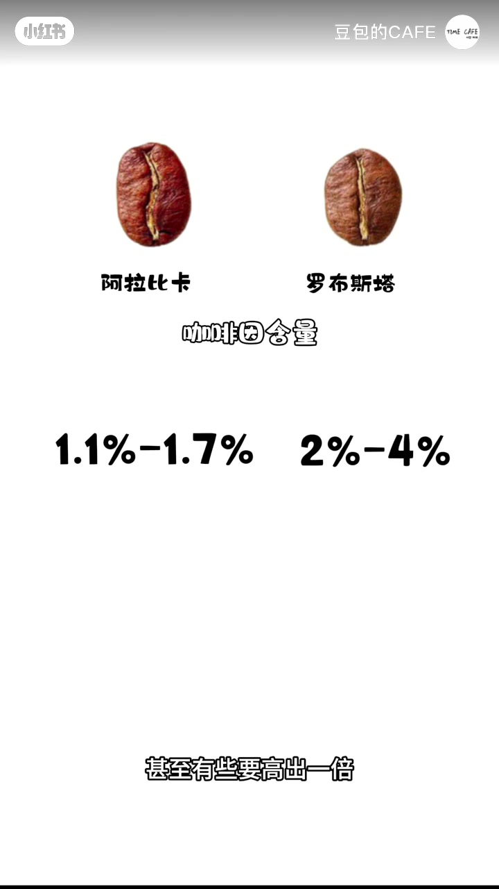
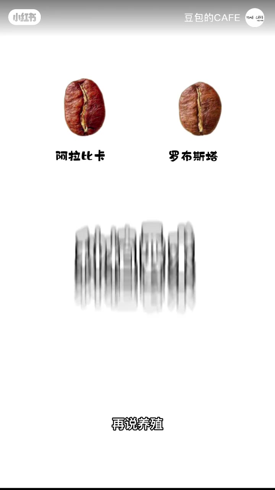
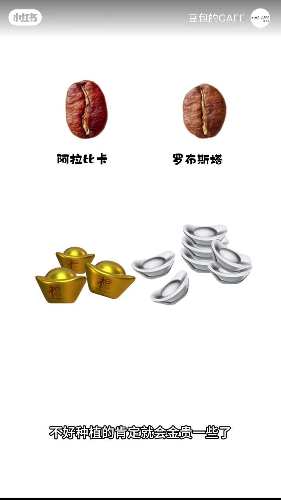
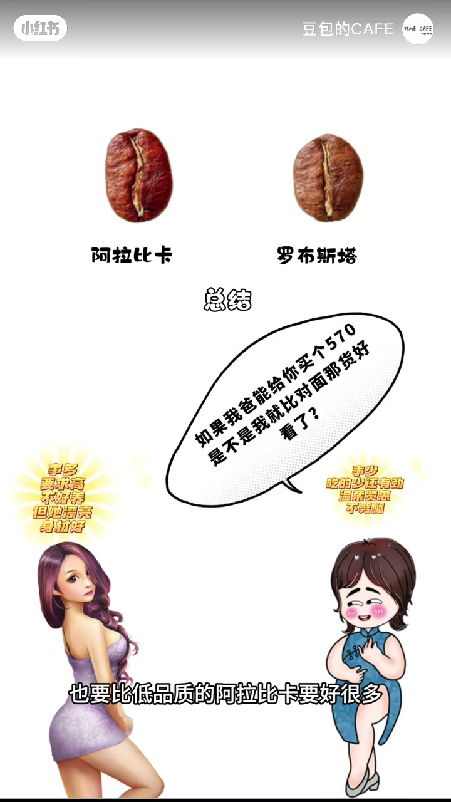

内容要点
承接「三大品种」话题：先排除细长像瓜子的利比瑞卡（市面不常见）。重点对比阿拉比卡与罗布斯塔——中缝弯/直、体型长/短饱满；罗布斯塔咖啡因更高（有的约高一倍），过高也不好；风味上阿拉比卡花果香更丰富、酸甜苦更复合，罗布斯塔香气少偏苦；种植上阿拉比卡娇贵、要海拔气候且不耐病虫害，罗布斯塔抗造好种。总结后强调凡事没有绝对：高品质罗布斯塔可比低品质阿拉比卡好很多，只是平均对比；罗布斯塔常与阿拉比卡按比例混作意式拼配，下集再说。
知识结构
三大品种里利比瑞卡市面少见，先放下。
阿豆中缝弯、体型偏长；罗豆中缝直、偏短饱满。
罗豆咖啡因更高；阿豆风味更复合，罗豆偏苦。
阿豆娇贵金贵；罗豆抗造；平均对比+品质例外。
罗豆常入意式拼配，下集讲为什么拼。
认豆先看中缝与体型，再记咖啡因/风味/种植三条平均差异；品种标签不能代替品质等级——好罗豆可以打过差阿豆。
00:00-00:15三大品种：先放下利比瑞卡
「上次咱不是说咖啡豆有这三大品种吗？今天咱就说它们有啥区别。」先排除细长、像瓜子式的利比瑞卡——知道有这个品种就行，市面上不常见，于是把镜头留给剩下俩。

00:15-00:38外观与咖啡因
外观看中间这条线：阿拉比卡是弯的，罗布斯塔是直的；阿拉比卡多数体型偏长，罗布斯塔多数短一点、饱满一点。
再说咖啡因含量：罗布斯塔要高出阿拉比卡很多，甚至有些要高出一倍。咖啡因由肝脏代谢，太高也不是好事——把「含量高」从卖点改写成需要节制的变量。

00:38-01:46风味、种植与品质例外
风味：阿拉比卡花果香更丰富，酸甜苦更复合；罗布斯塔香气较少、风味比较苦。种植：阿拉比卡娇贵，对产地、海拔、纬度、气候要求高且不耐病虫害；罗布斯塔抗造，环境海拔要求小很多——作者开玩笑说可能咖啡因太高虫子都不敢吃。
不好种植的就会金贵一些。总结后立刻刹车：凡事没有绝对，高品质罗布斯塔也要比低品质阿拉比卡好很多，这只是平均对比。罗布斯塔多数风味一般，但仍有作用，比如与阿拉比卡按比例混合成意式拼配——为什么拼，下集再说。



完整转录（43段）
以下文本由 Whisper medium 模型自动转录，可能存在少量识别误差，已尽可能修正明显 ASR 错字。
上次咱不是说咖啡豆有这三大品种吗
今天咱就说它们有啥区别
首先咱们排除这个细长向瓜子式的利比瑞卡
你知道有这么个品种就行了
它在市面上不常见
那咱就看剩下这俩的区别
先说外观看看中间的这条线
阿拉比卡是弯的
罗布斯塔是直的
阿拉比卡多数体型是长的
罗布斯塔多数短一点 饱满一点
咱们再说咖啡因含量
罗布斯塔咖啡因含量要高出阿拉比卡很多
甚至有些要高出一倍多
咖啡因被人体吸收是由肝脏代谢的
咖啡因太高也不是一件好事
再说风味
阿拉比卡的风味就要比罗布斯塔好很多了
阿拉比卡花果香比较丰富
并且风味上酸甜苦比较复合
而罗布斯塔香气较少 风味比较苦
再说种植 阿拉比卡比较娇贵
对产地 海拔 纬度 以及气候
有较高的要求 并且不耐病虫害
那罗布斯塔就抗造一点
对环境和海拔要求小很多
可能它咖啡因含量太高
虫子都不敢吃它 比较好种植
说白了不好种植的肯定就会金贵一些了
总结一下 阿拉比卡最种植环境要求高
风味比较丰富并且复合 咖啡因含量适中
罗布斯塔呢 比较好种植
但风味较差 比较苦涩
咖啡因含量较高
但你要记住 凡事没有绝对
即便如此 高品质的罗布斯塔
也要比低品质的阿拉比卡要好很多
所以我们也只是做了平均的对比而已
那罗布斯塔风味多数不是很好
那它也在发挥它的作用
比如与阿拉比卡按比例混合在一起
作为意式拼配豆 为啥要拼在一起
时间有限 咱们下次再说